开源中最好的Web开发的资源
文章来源：Best “must know” open sources to build the new Web。个人感觉这个收集贴收集成相当的全。
学习HTML 5编程和设计
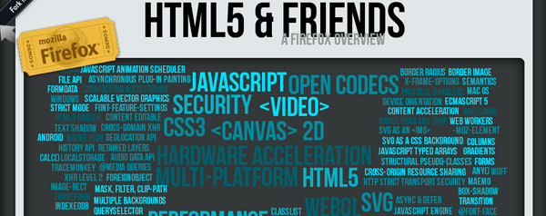
- ★ HTML5 Rocks : Major Feature Groups 的学习 HTML5 的资源 (HTML5 演示, 教程 ). 源码
- 很不错的 HTML5 Dashboard – Mozilla，效果很炫。
- WhatWG Developers, 一个清楚的 HTML5 技术规格说明书。
- ★ StackOverflow : 大名鼎鼎的技术问答式论坛。
- ★ Addyosmani, jQuery 和 JavaScript 文章教程
- Sohtanaka, jQuery 和 JavaScript 文章和教程
- ★ Nettuts+ 是一个面对Web开发人员和设计人员的网站，提供各种技术教程和文章，覆盖 HTML, CSS, Javascript, CMS’s, PHP 和 Ruby on Rails.
- Codrops, 教程和 web 资源
- WebAppers, 最好的开源资源
- Tutorialzine – PHP MySQL jQuery CSS 教程, 资源和赠品
- Mozilla JavaScript guide
- codes snippets, 作者自己收集的一些代码片段
服务器端的软件
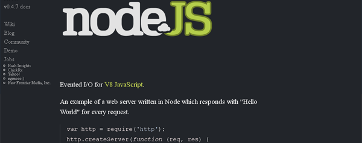
- ★ Node.js 是服务器端的 JavaScript 环境，其使用了异步事件驱动模式。其让Node.js在很多互联网应用体系结构下获得非常不错的性能。 源码 和 实时演示。
- PhantomJS 也是一个服务器端的 JavaScript API的WebKit。其支持各种Web标准： DOM 处理, CSS 选择器, JSON, Canvas, 和 SVG
- Lighttpd 一个轻量级的开源Web服务器。新闻，文档，benchmarks, bugs, 和 download. Lighttpd 支撑了几个非常著名的 Web 2.0 网站，如：YouTube, wikipedia 和 meebo.
- NGinx, 性能巨高无比的轻量级的Web服务器。比Apache高多了。花了6年的时间，终于走到了1.0版。
- Apache HTTP Server 是一个很流行的并支持多个流行的操作系统的Web服务器。
- ★ PHP 可能是最流行的服务器端的Web脚本动态处理语言。
- 当然，还有 Ruby, Python, Erlang, Perl, Java, .NET, Android, C++, Go, Fantom,CoffeeScript, D, …
PHP 框架和工具
- ★ WordPress 是一个基于博客系统的开源软件。参看《WordPress是怎么赢的？》
- Drupal 是一个内容管理系统 (CMS).
- Centurion 是一个新出现的开源 CMS ，一个灵然的 PHP5 Content Management Framework. 使用 Zend Framework, 其组件坚持通用，简单，清楚和可重用的设计原则。
- phpBB 一个开源的论坛（国内的Discuz！更多）
- ★ SimplePie : 超快的，易用的, RSS 和 Atom feed PHP解析。
- ★ PHPthumb, PHP 图片处理库
- ★ PHPMailer 强大的全功能的PHP邮件库
- PubSubHubbub协议，一个简单，开放， server-to-server 的 pubsub (publish/subscribe) 协议——Atom and RSS的扩展。
- 更多的请参看 – 20个你应该知道PHP库 和 9个强大免费的PHP库
数据库
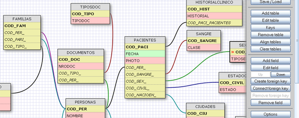
- ★ Apache CouchDB 是一个面向文档的数据库管理系统。它提供以JSON 作为数据格式的REST 接口来对其进行操作，并可以通过视图来操纵文档的组织和呈现。.源码.
- MonoQL 是一个采用PHP+ExtJS开发的MySQL数据库管理工具。界面极像一个桌面应用程序，支持大部分常用的功能包括：表格设计，数据浏览/编辑，数据导入/导出和高级查询等。
- MariaDB 是MySQL的一个分支，由MySQL 创始人Monty Widenius 所开发。GPL，用来对抗Oracle所有的MySQL的license的不测。自Oracle收购SUN以来，整个社区对于MySQL前途的担忧就没有停止过。
- ★ SQLite 不像常见的客户端/服务器结构范例，SQLite引擎不是个程序与之通信的独立进程，而是连接到程序中成为它的一个主要部分。所以主要的通信协议是在编程语言内的直接API调用。这在消耗总量、延迟时间和整体简单性上有积极的作用。整个数据库（定义、表、索引和数据本身）都在宿主主机上存储在一个单一的文件中。它的简单的设计是通过在开始一个事务的时候锁定整个数据文件而完成的。库实现了多数的SQL-92标准，包括事务，就是代表原子性、一致性、隔离性和持久性的（ACID），触发器和多数的复杂查询。不进行类型检查。你可以把字符串插入到整数列中。某些用户发现这是使数据库更加有用的创新，特别是与无类型的脚本语言一起使用的时候。其他用户认为这是主要的缺点。
- SQL 在线设计编辑器，这一节的那个图片就是这个在线编辑器的样子了。一个画数据库图表的在线工具。很强大。
API 和 在线数据
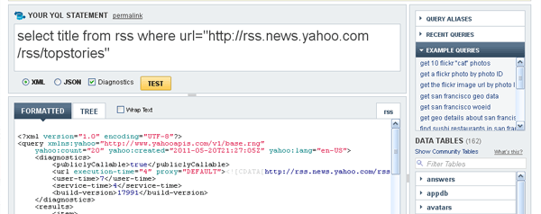
- ProgrammableWeb, 最流行的Web Services 和 API 目录大全。
- Google Data Protocol 一组Google服务的数据服务API。
- Yahoo! Developer Network – APIs 和 Tools
- Yahoo! Pipes 可视化在线编程工具，它是一个用于过滤、转换和聚合网页内容的服务。
- ★ The Yahoo! Query Language 一个很像 SQL的网页查询工具。
在线代码和媒体编辑器
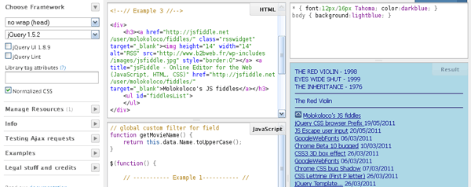
- ★ CodeRun Studio一个基于JavaScript语言开发的跨平台的集成开发环境，它立足于云计算的设计思路，方便开发者在浏览器端便可以轻松开发、调试和部署网络应用程序。（参看《Coderun.com 在线开发IDE》）
- Cloud9 IDE – 一个基于Node.JS构建的JavaScript程序开发Web IDE。它拥有一个非常快的文本编辑器支持为JS, HTML, CSS和这几种的混合代码进行着色显示。
- ★ jsFiddle – Javascript的在线运行展示框架，这个工具可以有效的帮助web前端开发人员来有效分享和演示前端效果，其简单而强大 (JavaScript, MooTools, jQuery, Prototype, YUI, Glow and Dojo, HTML, CSS)
- Akshell，一种云服务，它使用服务端的JavaScript和在线的IDE帮助开发者进行快速应用程序开发。 它还提供云托管，所以部署是即时的。
- JSONeditor, 一个好用的JSON 编辑器
- ★ TinyMCE 一个轻量级的基于浏览器的所见即所得编辑器，支持目前流行的各种浏览器，由JavaScript写成。
- Ext Designer 是一个桌面应用工具，帮助你快速开发基于ExtJS 的用户界面。
- ★ LucidChart，一款基于最新的html5技术的在线图表绘制软件，功能强大，速度快捷，运行此软件需要支持html5的浏览器。
- Balsamiq Mockups, 产品设计师绘制线框图或产品原型界面的利器。
- Color Scheme Designer 3 - 一个免费的线上调色工具
- ★ Pixlr, 是一个来自瑞典基于Flash的免费在线图片处理网站。除了操作介面和功能接近Photoshop，还是多语言版本，支持简体中文。（以前酷壳介绍过）
- Aviary, 是一个基于HTML5 的在线图片处理工具，可以很容易的对图片进行后期处理。 Aviary API
- Favicon Generator, 线上favicon(16×16)制作工具。
代码资源和版本控制
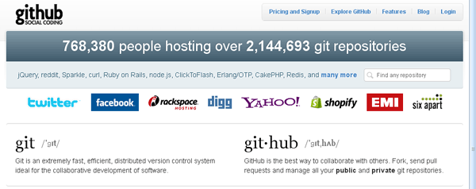
- ★ GitHub 是一个用于使用Git版本控制系统的项目的基于互联网的存取服务。
- Git 是一个由Linus为了更好地管理linux内核开发而创立的分布式版本控制／软件配置管理软件。其巨快无比，高效，采用了分布式版本库的方式，不必服务器端软件支持，使源代码的发布和交流极其方便。
- Google Code 谷歌公司官方的开发者网站，包含各种开发技术的API、开发工具、以及开发技术参考资料。
- Google Libraries API Google 将优秀的 JavaScript 框架部署在其 CDN 上，在我们的网站上使用 Google Libraries API 可以加速 JavaScript 框架的加载速度。
- Snipplr 一个开放的源代码技巧分享社区，号称Code 2.0。和一般的源码分享网站不同，它针对的并不是大型网站源码，而是一些编程的代码技巧。
JavaScript 桌面应用框架
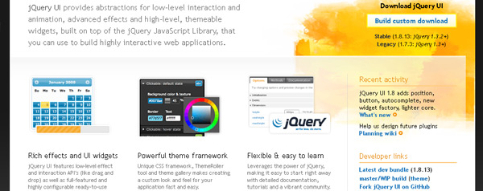
- ★ jQuery 是一个快速、简单的JavaScript library， 它简化了HTML 文件的traversing，事件处理、动画、Ajax 互动，从而方便了网页制作的快速发展。 源码, API, API浏览, 很不错的文档.
- ★ 官方的 jQuery User Interface (UI) library (演示和文档). 源码,Themes Roller, Download.
- YUI 2 — Yahoo! User Interface Library
- Mootools, 一个超级轻量级的 web2.0 JavaScript framework
- Prototype 提供面向对象的Javascript和AJAX
- Dojo The Dojo Toolkit，一个强大的无法被打败的面向对象JavaScript框架。主要由三大模块组成：Core、Dijit、DojoX。Core提供Ajax,events,packaging,CSS-based querying,animations,JSON等相关操作API。Dijit是一个可更换皮肤，基于模板的WEB UI控件库。DojoX包括一些创新/新颖的代码和控件：DateGrid，charts，离线应用，跨浏览器矢量绘图等。
- ★ Ext JS 4, 业内最强大的 JavaScript framework。
- PHP.js, 一个开源的JavaScript 库，它尝试在JavaScript 中实现PHP 函数。在你的项目中导入PHP.JS 库，可以在静态页面使用你喜欢的PHP 函数。
JavaScript 移动和触摸框架
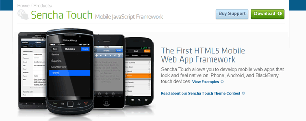
- ★ jQuery Mobile : 是 jQuery 在手机上和平板设备上的版本。jQuery Mobile 不仅会给主流移动平台带来jQuery核心库，而且会发布一个完整统一的jQuery移动UI框架。支持全球主流的移动平台。jQuery Mobile开发团队说：能开发这个项目，我们非常兴奋。移动Web太需要一个跨浏览器的框架，让开发人员开发出真正的移动Web网站。我们将尽全力去满足这样的需求。 Sources.
- Zepto.js Zepto.js 是支持移动WebKit浏览器的JavaScript框架，具有与jQuery兼容的语法。2-5k的库，通过不错的API处理绝大多数的基本工作。 Sources.
- MicroJS : Microjs网站应用列出了很多轻量的Javascript类库和框架，它们都很小，大部分小于5kb。这样你不需要因为只需要一个功能就要加载一个JS的框架。
- ★ PhoneGap :是一款开源的手机应用开发平台，它仅仅只用HTML和JavaScript语言就可以制作出能在多个移动设备上运行的应用。 Sources.
- ★ Sencha Touch Sencha Touch 是一个支持多种智能手机平台（iPhone, Android, 和BlackBerry）的 HTML5 框架。Sencha Touch可以让你的Web App看起来像Native App。美丽的用户界面组件和丰富的数据管理，全部基于最新的HTML5和CSS3的 WEB标准，全面兼容Android和Apple iOS设备。
- JQtouch, 是一个jQuery 的插件，主要用于手机上的Webkit 浏览器上实现一些包括动画、列表导航、默认应用样式等各种常见UI效果的JavaScript 库。 Sources.
- DHTMLX Touch 针对移动和触摸设备的JavaScript 框架。DHTMLX Touch基于HTML5，创建移动web应用。它不只是一组UI 小工具，而是一个完整的框架，可以针对移动和触摸设备创建跨平台的web应用。它兼容主流的web浏览器，用DHTMLX Touch创建的应用，可以在iPad、iPhone、Android智能手机等上面运行流畅。
jQuery 插件
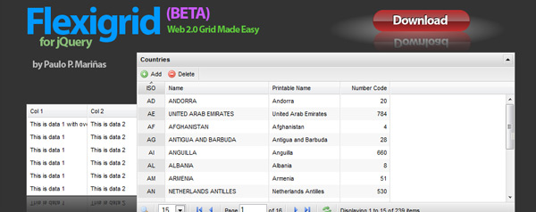
- Waypoints 是一个jQuery 用来实现捕获各种滚动事件的插件，例如实现无翻页的内容浏览，或者固定某个元素不让滚动等等。支持主流浏览器版本。
- Lazy loader 插件可以实现图片的延迟加载，当网页比较长的时候，会先只加载用户视窗内的图片，视窗外的图片会等到你拖动滚动条至后面才加载，这样有效的避免了因图片过多而加载慢的弊端。
- TweenJS : 一个简单和强大的 tweening / animation 的Javascript库。
- Easings 类Css3的jQuery 动画插件
- Spritely 这个插件可以创建出如flash一样的动画效果，比如：在页面上有一只飞动的小鸟，一个动态滚动的背景等。
- File Upload, jQuery 文件上传插件4.4.1
- Slideshow/Carousel 插件. Sources.
- Supersized – 全屏式的背景/幻灯片插件
- Masonry i一款非常酷的自动排版插件，这款jQuery工具可以根据网格来自动排列水平和垂直元素，超越原来的css. Sources.
- jQuery 简单 Layout 演示，管理各种边栏式，可改变大小式的布局。
- Flexigrid – jQuery 数据表插件
- Isotope绝对是一个令人难以置信的jQuery插件，你可以用它来创建动态和智能布局。你可以隐藏和显示与过滤项目，重新排序和整理甚至更多。
- Super Gestures jQuery 插件可以实现鼠标手势的功能。
- MouseWheel 是由Brandon Aaron开发的jQuery插件，用于添加跨浏览器的鼠标滚轮支持。
- AutoSuggest jQuery 插件可以让你添加一些自动完成的功能。
- qTip 一个漂亮的jQuery 的工具提示插件，这个插件功能相当强大。
- jQuery Charts and graphic 用来制作图表。
- jQuery Tools– The missing UI library
其它 jQuery 资源
- http://www.smashingmagazine.com/2011/04/07/useful-javascript-and-jquery-tools-libraries-plugins
- http://webdesigneraid.com/weekly-html5-news-and-inspirations-%E2%80%93-tutorials-tools-resources-and-freebies-v-2/
- http://www.designer-daily.com/15-useful-jquery-plugins-and-tutorials-5207
- http://www.julien-verkest.fr/22/11/2007/240-plugins-jquery
- http://www.hotscripts.com/blog/10-great-html5-experiments-apps/
- http://www.noupe.com/jquery/excellent-jquery-navigation-menu-tutorials.html
- http://www.noupe.com/php/20-useful-php-jquery-tutorials.html
- http://aext.net/2010/04/excellent-jquery-plugins-resources-for-data-presentation-and-grid-layout/
- http://webdesigneraid.com/html5-canvas-graphing-solutions-every-web-developers-must-know/
- http://gestureworks.com/features/open-source-gestures/
- http://edtechdev.wordpress.com/2011/01/14/some-exciting-new-html5javascript-projects/
- http://net.tutsplus.com/articles/web-roundups/30-developers-you-must-subscribe-to-as-a-javascript-junkie/
HTML5 视频播放器
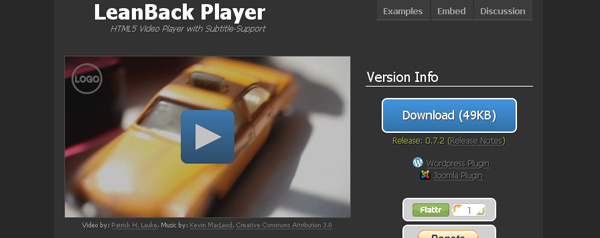
- ★ Popcorn.js 是一个HTML5 Video框架，它提供了易于使用的API来同步交互式内容，让操作HTML5 Video元素的属性，方法和事件变得简单易用。 (来自Mozilla)
- LeanBack Player HTML5视频播放器,没有依赖任何JavaScript框架。支持全屏播放，音量控制，在同一个页面中播放多个视频。 (来自Google)
- Vid.ly 为你上传的视频提供转换功能，并且为转换后的视频创建一个短网址。通过Vid.ly，让你的视频可以在14种不同的浏览器和设备上播放，不需要再去考虑将要浏览视频的人使用什么设备了，以避免各各软件巨头之间的利益之争带来了不兼容，给用户带来了巨大的困扰，短网址让你可以通过Twitter、Facebook等方式方便分享视频。Vid.ly还可以通过html代码嵌入到其他网页中。Vid.ly免费帐户空间为1GB，免费帐户也没有播放或浏览限制。
JavaScript 音频处理与可视化效果
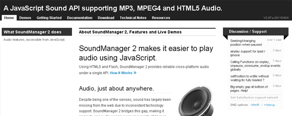
- ★ 使用HTML5 和 Flash, SoundManager V2 只用单一API的提供了可靠，简单和强大的跨平台的音频处理。
- DSP, JavaScript的声音Digital Signal Processing
- The Radiolab Hyper Audio Player v1, 带给你 WNYC Radiolab, SoundCloud 和 Mozilla Drumbeat
- jPlayer, 一个 jQuery HTML5 音频/ 视频库，功能齐全的API
JavaScript 图形 和 3D
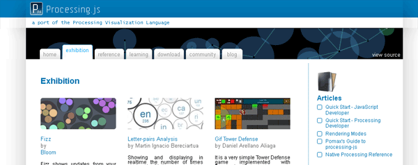
- ★ Processing.js是一个开放的编程语言，在不使用Flash或Java小程序的前提下, 可以实现程序图像、动画和互动的应用。其使用Web标准，无需任何插件。
- ★ Javascript 3D 引擎: ThreeJS 由 Mr Doob 开发，一个轻量级的 3D 引擎，不需要了解细节，傻瓜都能使用。这个引擎可以使用<canvas>, <svg> 和 WebGL.
- Shader Toy, 一款使用WebGL的在线着色器编辑器(2D/3D). 基于在线的应用架构使您无需下载任何软件即可开始体验. Shader Toy包含大量实用着色器, 诸如光线追踪, 场景距离渲染, 球体, 隧道, 变形, 后期处理特效等.
- PhiloGL, Sencha的PhiloGL是首个WebGL开发工具之一，提供了高水准的功能，来构建WebGL应用。Sencha创建了几个演示，来描述框架交互式3D虚拟化的能力，比如3D view of global temperature changes。
- WebGL Inspector 你就Firebug等Web调试工具一样，这个是 WebGL的调试工具。
- WebGL frameworks 由 Khronos Group 收集的一个WebGL框架列表。
- EaselJS, 一个使用html5的canvas的 JavaScript 库. Sources.
- JavaScript Game Frameworks 免费的JS游戏框架列表。另，可参看 JS游戏框架列表。
- Raphaël是一个小型的JavaScript 库，用来简化在页面上显示向量图的工作。你可以用它在页面上绘制各种图表、并进行图片的剪切、旋转等操作。参看Javascript向量图Lib–Raphaël
- jQuery SVG 插件让你可以了 SVG canvas 进行交互。
- Google chart tools – 参看本站的使用Google API做统计图
- Arbor.js, 是一个利用webworkers和jQuery创建的数据图形可视化JavaScript框架。它为图形组织和屏幕刷新处理提供了一个高效、力导向布局算法。
JavaScript 浏览器接口 (HTML5)
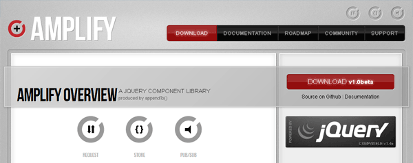
- ★ Modernizr – 是一个专为HTML5 和CSS3 开发的功能检测类库，可以根据浏览器对HTML5 和CSS3 的支持程度提供更加便捷的前端优化方案.Sources. 一个有用的列表 cross-browser Polyfills
- HTML5Shiv : 该项目的目的是为了让IE 能识别HTML5 的元素。
- Polyfills : 这个项目收集了一些代码片段其用Javascript支持不同的浏览器的特别功能，有些代码需要Flash。
- YepNopeJS : 一个异步的条件式的加载器。Sources.
- jQuery CSS3 Finalise : 是否厌倦了为每一个浏览器的CSS3属性加前缀？
- ★ Amplify.js :一套用于web应用数据管理和应用程序通讯的 jQuery 组件库。提供简单易用的API接口。Amplify的目标是通过为各种数据源提供一个统一的程序接口简化各种格式数据的数据处理。Amplify的存储组件使用localStorage 和 sessionStorage标准处理客户端的存储信息，对一些老的浏览器支持可能有问题。Amplify’为jQuery的ajax方法request增加了一些额外的特性。 Sources.
- History.js 优美地支持了HTML5 History/State APIs
- Socket.IO Web的socket编程。
JavaScript 工具
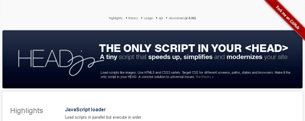
- ★ {{mustaches}} 小型的 JavaScript 模板引擎。
- json:select(), CSS式的JSON选择器
- HeadJS, 异步JavaScript装载。其最大特点就是不仅可以按顺序执行还可以并发装载载js。
- JsDoc Toolkit是一款辅助工具，你只需要根据约定在JavaScript 代码中添加相应的注释，它就可以根据这些注释来自动生成API文档。
- Responsive image, 一个试验性的项目，用来处理responsive layouts 式的图片。
- UglifyJS是基于NodeJS的Javascript语法解析/压缩/格式化工具，它支持任何CommonJS模块系统的Javascript平台。
- Dhteumeuleu, 交互式的 DOM 脚本和DHTML 的开源演示。
- Backbone是一个前端 JS 代码 MVC 框架，被著名的 37signals 用来构建他们的移动客户端。它不可取代 Jquery，不可取代现有的Template 库。而是和这些结合起来构建复杂的 web 前端交互应用。如果项目涉及大量的 javascript 代码，实现很多复杂的前端交互功能，首先你会想到把数据和展示分离。使用 Jquery 的 selector 和 callback 可以轻松做到这点。但是对于富客户端的WEB应用大量代码的结构化组织非常必要。Backbone 就提供了 javascript 代码的组织的功能。Backbone 主要包括 models, collections, views 和 events, controller 。
客户端和模拟器
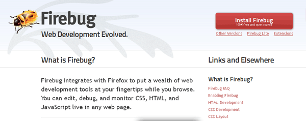
- BrowserShot, 检查浏览器的兼容性，跨浏览器平器的测试
- Test everything… 输入一个你想要测试的URL……
- Android browser 模拟器
- iPhone browser 模拟器
- Opera browser 模拟器
- ★ Firebug 与 Firefox 集成，可以查看和调试你的Web页面。
CSS3 和 字库
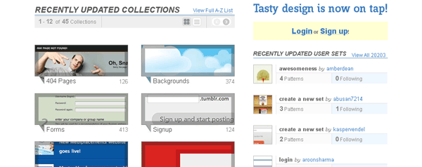
- ★ CSS3 Maker CCS3的生成器
- 容易地创建 CSS3 animations。 Sencha Animator 是一个桌面应用可以为WebKit浏览器和触摸式移动设备创建 CSS3 animations 。
- CSSwarp – CSS 文本扭曲生成器
- Gradient Editor, 一个强大的Photoshop式的CSS 渐变编译器。来自 ColorZilla
- ★ Google Web Fonts 通过Google Web Fonts API 可以浏览所有的字体
- @font-face Kit Generator, 为Web转换字体
- Typetester, 比较字体。
- Media Queries. 一组 responsive web 设计。
- Pattern TAP, UI组件。
Website (FULL) 模板
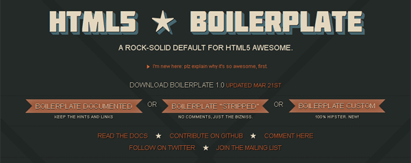
- ★ HTML5 Boilerplate 是一个HTML5 / CSS / js模板，是实现跨浏览器正常化、性能优化，稳定的可选功能如跨域Ajax和Flash的最佳实践。 项目的开发商称之为技巧集合，目的是满足您开发一个跨浏览器，并且面向未来的网站的需求。 Sources.
- HTML5 starter pack 是一个干净的和有组织的目录结构，其可适合很多项目，还有一些很常用的文件，以及简单的Photoshop设计模板。
- ★ Initializr 是一个HTML5 模板生成器，其可以帮你在15秒内创建一个HTML5的项目。
- Animated Portfolio Gallery （教程）
- Slick MobileApp Website 如果通过 jQuery 和 CSS 制作一个手机应用的网站。
- RSS Reader 如果通过 jQuery Mobile 创建一个RSS Reader
- ★ Single Page Applications 使用jQuery的朋友们 (Backbone, Underscore, …)创建单一页面。
- Google TV Optimized Templates, 传统电视已经开始和网路融合，但现阶段产业仍然正在摸索之中，为此将来的网页亦会有结构上的改变。Google TV Optimized Templates是一个用HTML/JavaScript制成的开源软体，一如其名是一个对Google TV作出了最佳化的的网页范本，其特色是以遥控器作为操作的前提，令使用者无需输入任何文字就可以进行控制。未来除了会有专用遥控器外，还会采用智能手机透过W-iFi控制Google TV的方法。Optimized Templates的界面中左方会展示分类，右方会显示该分类下的影片截图，影片播放、切换、全画面表示都可透过键盘上的方向键、Backspace或Enter等键完成，方便今后的网站开发人员借镜。HTML5 版的模板使用了 Google TV UI library, jQuery 和 Closure 。
（全文完）
9


 (27 人打了分，平均分： 4.85 )
(27 人打了分，平均分： 4.85 )
东西太多了, 东西一多就有种滥竽充数的感觉.
@的份额 东西是很多，但你可以选择你需要的部分。
很好
很详细啊。。。慢慢看
好东西啊
不错的资源，谢谢分享。:)
非常感谢啊，最近开始这个有兴趣，但是苦于没有有经验的人给个指导。最需要的就是这种资源。;)
多些分享，辛苦了
很赞！
给力ing~
我估计我只能收藏一下，也许以后有时间，慢慢从里头挑几个来看了…
不错的资源，谢谢分享。:)
不错呀，谢谢分享
强烈支持！！
太全面了，绝对的精品，果断收藏！！！
能不能转载啊？建议博主不要“版权所有”了。。大家一起用cc吧～
转载没有问题啊。只要注明作者和出处就可以了。绝对不能用于商业用途，否则我告你！嘿嘿
好东西，收藏了，如果能够有针对性的介绍一下个别新事物就更好了，这样显得有点杂乱~
http://www.iteye.com/topic/1073767
iteye有个转载，貌似连地址也没提起，这…这…有点说不过去了啦
非常感谢
谢谢,收藏了,有时间好好看看
谢啦～ 那就用一起用Creative Commons嘛～ @陈皓
非常给力！
强大的~~转走收藏~~
收藏了,实用的汇总
一个大集合啊~~ 8错~~~
很不错的集合，收藏了。
非常实用的汇总,话费不少功夫吧
OK,你赢了。我头晕中
收藏了，很实用
从某人的书签点过来～很丰富的资料